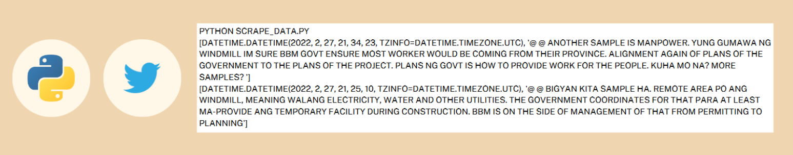
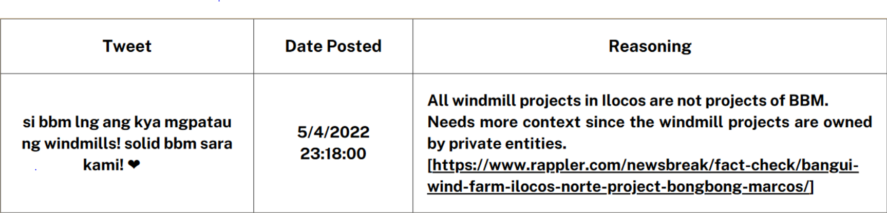
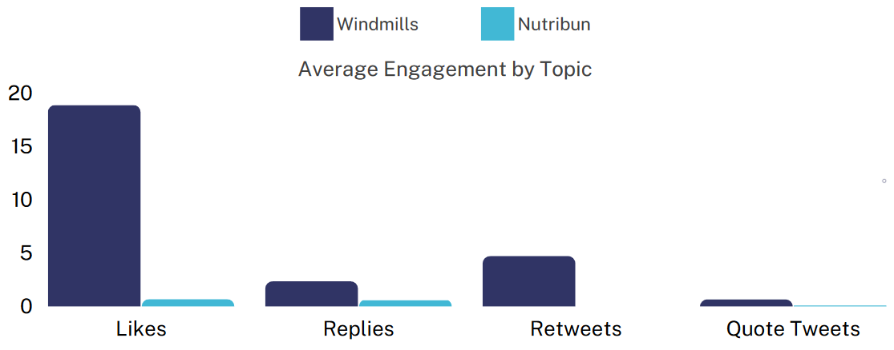
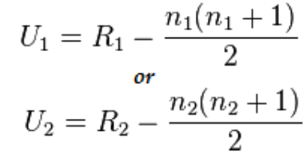
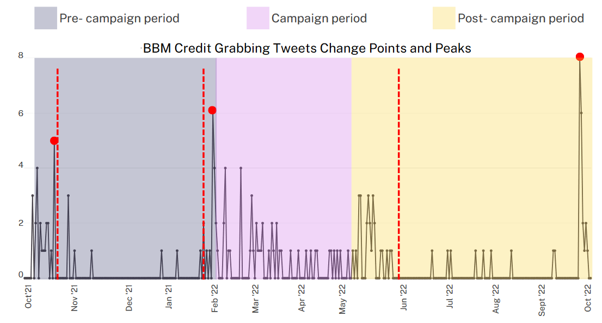
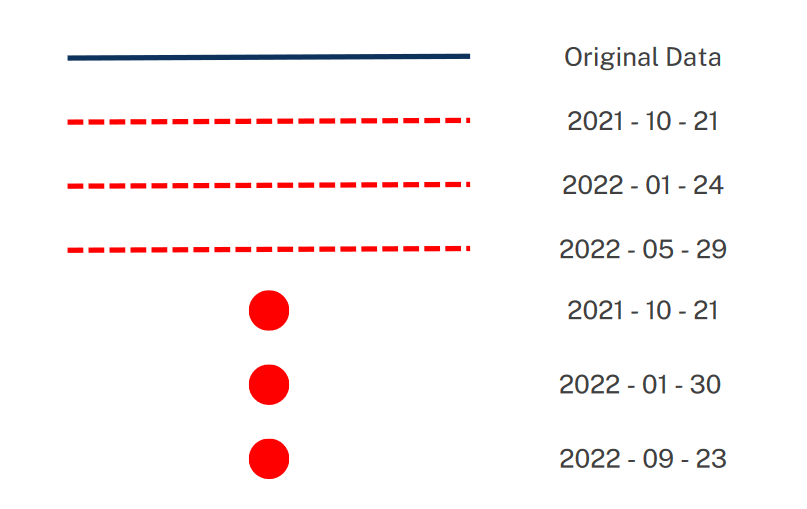

Introduction
With the recent results of the 2022 Philippine Presidential Elections, fake news became a widespread topic due to the misinformation propagated in social media platforms promoting certain candidates [1][2][3]. One of said candidates is Bongbong Marcos (BBM), which based on a Rappler report showed majority of Twitter users which used the hashtag #LabanMarcos were only created near BBM’s declaration of candidacy [4]. This report by Rappler implies that these Twitter users may have been created for the purpose of promoting BBM’s presidential campaign. Given these findings, the objective of this study is to determine if the number of credit grabbing tweets associated with BBM may have significantly changed during the presidential campaign period.
Materials and Methods
The methodology can be summarized in the following steps:
1. Collecting credit-grabbing tweets spanning the campaign period using the Python library snscrape
2. Manual misinformation labeling with VERA Files criteria as basis
3. Data preprocessing and visualization using Pandas, Matplotlib, Seaborn and Plotly

4. Computing statistical significance with Kruskall Mann-Whitney U Tests
5. Determining specific spikes in misinformation using Event Detection Modeling
 Results and Discussion
| Kruskall-Wallis Test | ||||
|---|---|---|---|---|
| Datasets compared | Test Statistic |
x2 critical value (df =2 ) |
p-value | Significance Level |
| Campaign vs pre-campaign | 5.423 | 5.991 | 0.066 | 0.05 |
Given that the p-value is less than the significance level, we fail to reject the null hypothesis, i.e., there is no significant difference in the number of BBM credit-grabbing tweets before, during and after the campaign period. This implies that the number of BBM credit-grabbing tweets may have been prevalent before and after the campaign period. To confirm this, a post hoc analysis was also performed
| One-Tailed Mann-Whitney U Test | ||||
|---|---|---|---|---|
| Datasets compared | Test Statistic | Critical value | p-value | Significance Level |
| Campaign vs pre-campaign | 309 | 331 | 0.009 | 0.05 |
| Campaign vs post-campaign | 382 | 317 | 0.201 | 0.05 |
With the p-value less than the significance level for the campaign vs pre-campaign datasets, the null hypothesis is rejected, i.e., BBM credit-grabbing tweets are significantly less during the campaign period compared to the pre-campaign period. It may be the case that BBM credit-grabbing tweets were even more widespread before the campaign period has started
Numerous dates pop up in the event detection model. October 20 and 21, 2021 are the first dates of the peak and the change event, respectively. These dates are within the same month as the date that Bongbong Marcos filed for his certificate of candidacy (COC) on October 6, 2021. Note that after the peak and the change points, there is a noticeable drop in the number of misinformation tweets. It was on January 24 and January 30 of 2022 that the number of tweets started to rise again. This drop might be explained by Twitter’s report on suspending hundreds of twitter accounts for violating platform manipulation and spam policy. The next and last change point detected was on May 29, 2022, weeks after the election. Little to no tweets appeared afterwards, until September 2022 where another peak can be seen, September 23, 2022. This peak could be the result of Joe Biden praising BBM for his ‘work’ on windmills, on September 22, 2022 at the UN General Assembly.
Conclusion and Implications
From the statistical tests, it can be concluded that BBM credit-grabbing tweets were already prevalent before the presidential campaign. It is therefore recommended to explore data beyond the project’s data collection timeline, October 2021 to September 2022, in order to trace the wave of misinformation associated with the 2022 Philippine Elections. Moreover, the analysis of the dates shows that BBM’s filing for COC, the suspension of pro-BBM Twitter accounts, the end of elections, and Joe Biden’s mention of the windmills occurs near the peaks and change points of dis/misinformation tweets. These dates could be further studied to determine the existence/non-existence of a correlation and/or causation to the amount of dis/misinformation tweets.
This study can help with fact checking organizations in order to know and predict when misinformation is most prevalent, and to allot their resources accordingly. These findings could also be integrated into machine learning models of misinformation detector in order to make them more accurate.